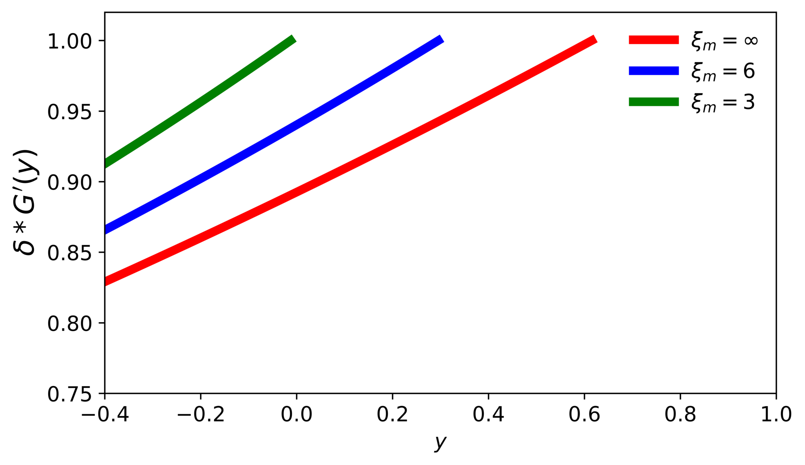
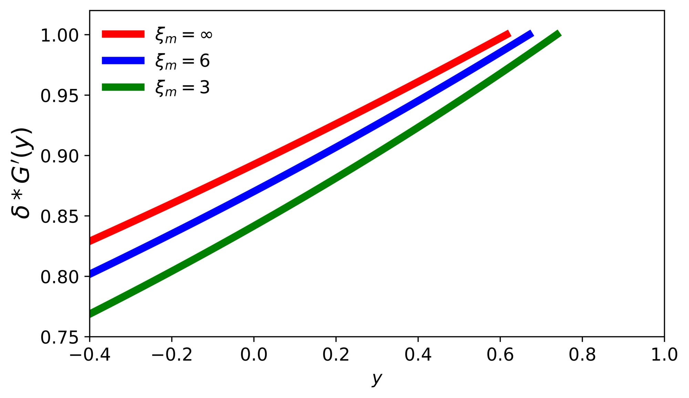
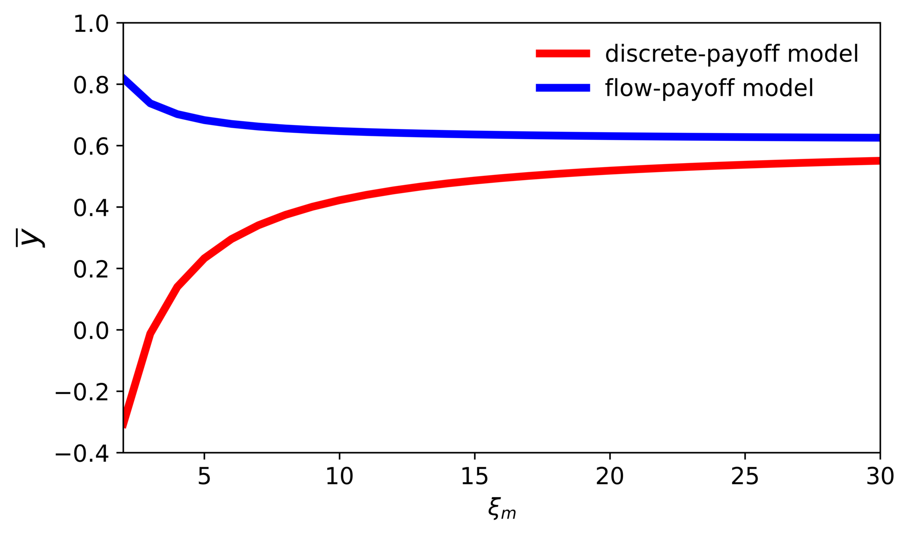
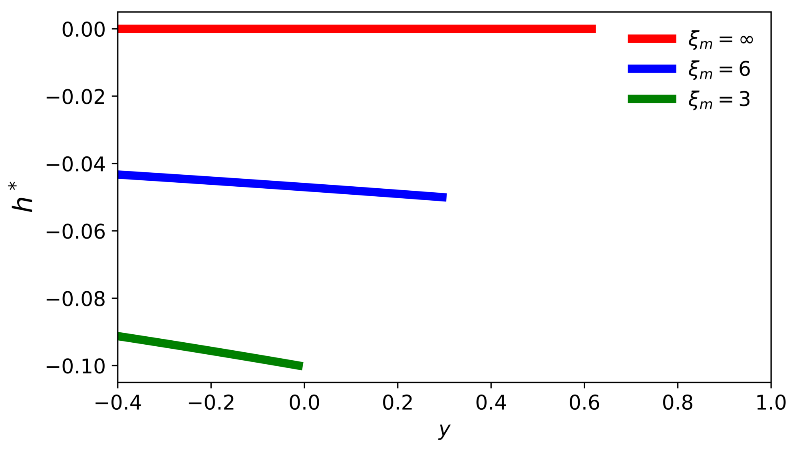
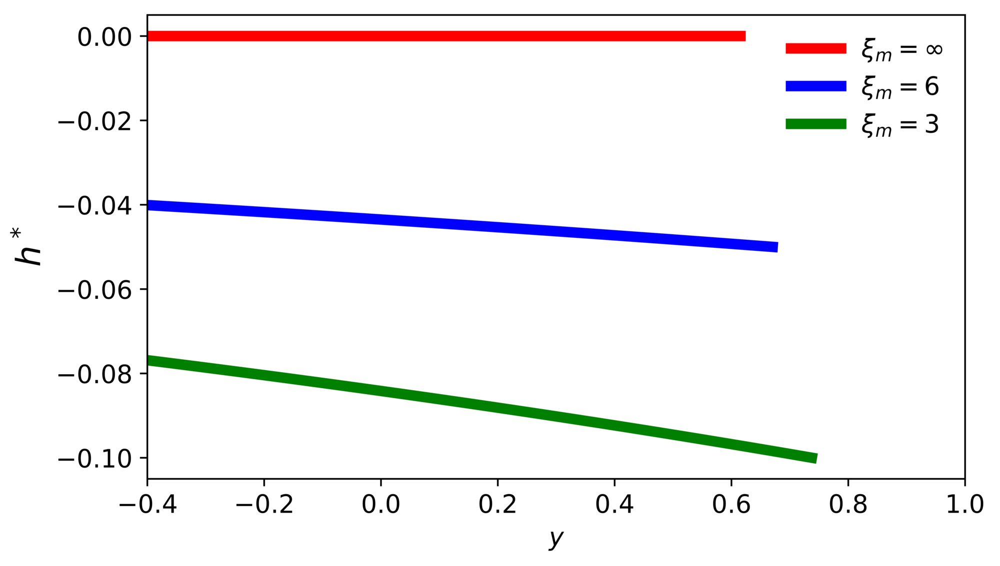

10. Comparison to a real options formulation#
This page is Appendix L of the paper.
As we noted in Section 10 of the paper, there are similarities, but also differences, in our R&D investment problem and a real options problem.
The decision-maker decides when to exercise the option with a known cost of doing so. Other than access to this stochastic payoff, the decision-maker can invest in a riskless technology. In the first specification, exercising the option provides a discrete payoff. In the second specification, exercising the option entitles the decision maker with access to a stochastic flow. To support our investigation, we make the two payoffs comparable by scaling the flow so that the present values of the discrete payoff and flow payoff processes are the same in the absence of uncertainty about the payoff dynamics.
10.1. Discrete-payoff model#
Consider a robust counterpart to Model I in Miao and Wang (2007). We let the utility be linear in consumption and the income process be:
For purposes of illustration, we set \(\nu = .1\) and \(\sigma = .3\). When the option is exercised, we assume a payoff equal to the discounted present value (with a constant discount rate \(\delta\)) of current and future \(Y_t\) minus a prespecified cost \(I\). In our illustration, we set \(I = 10\). The risk-free rate and subjective rate of discount are the same, which we set as \(\delta = .02\). We refer to this as the discrete-payoff model.
The post exercise value function satisfies:
which can be solved by setting \(V^0(w) = \delta w\). The value function, \(V\), prior to exercising the option solves the HJB equation:
Guess that \(V(w,y) = \delta[ w + G(y)]\). Then
where the minimizing \(h\) solves:
The discounted expected value of the option payoff with income realization, \(y\), is
obtained by solving the Feynman-Kac equation:
Thus, value matching gives:
and smooth pasting gives
10.2. Flow-payoff model#
We next change the payoff on the investment by letting it be continuous, given by the \(Y\) process. We refer to this as the flow-payoff model. The value function, \(V^o\), after exercising satisfies the HJB equation:
We guess that \(V^o(w,y) = \delta[w + F(y)]\). With this guess, we solve
where
The solution for \(F\) is:
implying that \(h^* = - \sigma/\xi_m\).
As with the discrete-payoff specification, the value function prior to the option being exercised solves (29) with \(V(w,y) = \delta[ w + G(y)]\). The minimizing \(h^*\) is given by formula (30). The value-matching condition is:
and the smooth-pasting condition is:
10.3. Exercise thresholds#
Notice that the value matching condition is the same for both models in the limiting case in which \(\xi_m \rightarrow \infty\). In both models, the exercise threshold \(\bar y\) satisfies: \(\delta G_y\left( \bar y \right) = 1\) even for \(\xi_m < \infty\), but, of course, the \(G\) functions are different. Figure 13 plots the derivatives for each model specification and for alternative values of the robustness parameter, \(\xi_m\). For the discrete-payoff model, the derivatives decrease with \(\xi_m\), resulting in higher values of \(y\) when the option is exercised. For the stochastic flow-payoff model the derivatives increase with \(\xi_m\), resulting in lower values of the threshold \(\bar y\).


Figure 13: Plots of \(\delta G_y\) for different values of \(\xi_m\).
Consistent with this finding, we report in Figure 14 that uncertainty aversion has opposite implications for the threshold \(\bar y\) for the two payoff specifications. The implied uncertainty aversion for low values of \(\xi_m\) makes the investor more bullish on the investment for the discrete payoff specification in the sense that there is a lower investment threshold. The outcome gets reversed with the stochastic flow payoff: the investor is less bullish on the investment and exercises the option at a higher threshold with enhanced aversion. By design, the two curves converge when \(\xi_m \rightarrow \infty\).

Figure 14: Solution of exercise threshold \(\overline{y}\) for each model as functions of the robustness parameter, \(\xi_m\).
We plot the pre-exercise drift distortions \(h^*\) in Figure 15. The post-jump distortions are zero for the discrete-payoff specification, and, by the smooth pasting condition, equal to the distortion at the time the option is exercised for the flow-payoff specification. Recall that the \(h^*\)’s are expressed as drifts in a standard Brownian increment. They are not extreme for these illustrations, as the magnitude of the local mean distortion never exceeds ten percent of the standard deviation. The drift distortions prior to exercise are a bit larger in magnitude for the discrete-payoff specification.


Figure 15: Plots of \(h^*\) for different values of \(\xi_m\).
In both cases, robustness concerns induce more cautious assessments of the payoff prospects. In the discrete-payoff specification, the uncertainty is resolved as soon as the payoff is exercised, increasing the valuation; while in the flow-payoff specification, the post exercise valuation is diminished under robustness concerns because of the continued uncertainty about future payoffs.
Although there are intriguing similarities between this comparison of real options in different environments and our findings, the investment opportunities are quite different. Rather than an exercise decision, our social planner can make investments that increase the likelihood of a discovery. Uncertainty aversion makes the planner skeptical about the payoff horizon in our analysis. These differences make our uncertainty aversion impact not monotone as displayed in Table 21 and in contrast to the real options findings reported in Figure 14.